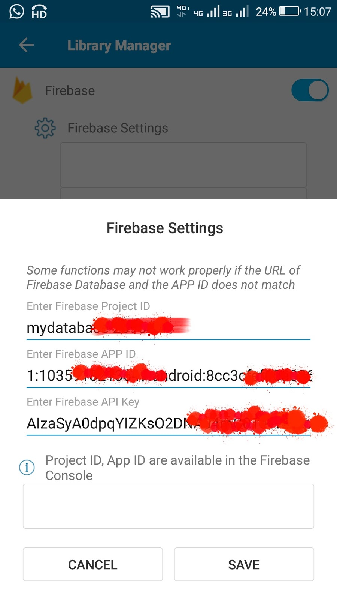
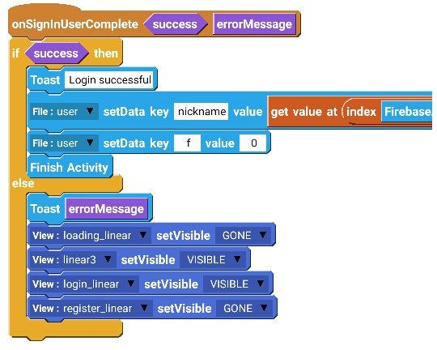
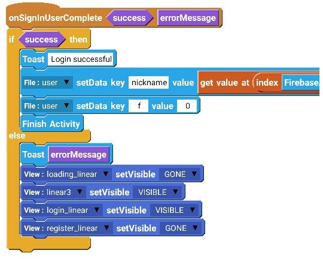

Sketchware Tuts
Firebase auth in Sketchware for Login Activity
In your Firebase account, go to Firebase authentication.
In Firebase authentication web set-up, go to SIGN-IN method, and enable Email/password and Anonymous.
Go to Project settings in your Firebase project and copy the Web API Key, Project ID, and App ID.
Paste the Project ID, App ID, and Web API Key in your project in Sketchware, in the Firebase settings.

On the MainActivity page add a File Shared preferences component user:user and an Intent i. Also add a Timer t and a Firebase Auth testlogin
Create a new page login.xml with Activity called LoginActivity
In onCreate event of MainActivity use blocks as shown in image below
It identifies main page with File user key page. It also checks if user is logged in to FirebaseAuth
If user is logged in then other blocks are executed
If user is not logged in, he is taken to LoginActivity using Intent i.
On LoginActivity VIEW area,
-
add two Linear(H) loading_linear and linear3
-
In linear3 add two Buttons button2 and button3 for Sign in and Sign up respectively
-
Below linear3 add two Linear(V) login_linear and register_linear
-
In login_linear add edittext3 and edittext4 for email and password respectively, and add a Button login_button for Sign in
-
In register_linear add edittext7, edittext6 and edittext5 for nickname, email and password respectively. Also add register_button for Sign up
In LOGIC area of LoginActivity, add a new File Shared preferences component user:user (same as in MainActivity),
a FirebaseDB component user_id:userid, and a Firebase Auth component testlogin (same as in MainActivity).
 Add a List Map map1 and a String list uid.
Also add a Map variable map_var, and a number variable n.
In onCreate event of LoginActivity add blocks as shown in image below
These blocks identify page by setting value login to file key page. They also make loading_linear VISIBLE and other linears GONE.
On button2 click add blocks shown in image below. These blocks make login_linear visible, and button2 red
On button3 click add blocks shown in image below. These blocks make register_linear visible, and button3 red
On register_button Click, add blocks as shown in image below.
Add a List Map map1 and a String list uid.
Also add a Map variable map_var, and a number variable n.
In onCreate event of LoginActivity add blocks as shown in image below
These blocks identify page by setting value login to file key page. They also make loading_linear VISIBLE and other linears GONE.
On button2 click add blocks shown in image below. These blocks make login_linear visible, and button2 red
On button3 click add blocks shown in image below. These blocks make register_linear visible, and button3 red
On register_button Click, add blocks as shown in image below.
 These blocks check if the EditText fields are empty. If they are empty it toasts a message. If not empty, it registers the email and password of user to Firebase Auth and makes loading_linear visible.
Add event Firebase Auth: onCreateUserComplete and use blocks as shown in image below.
If the user is registered successfully, these blocks push his FirebaseAuth Uid, and his nickname to Firebase DB user_id. If registration fails, these blocks make register_linear VISIBLE.
Add a new event FirebaseDB on child added. In this event use blocks as in image below.
These blocks get data from Firebase DB to List Map map1, and then create a String list uid from all the uid in List Map map1, and make login_linear VISIBLE
On login_button click use blocks as shown in image below
These blocks Sign in user using Firebase Auth and make loading_linear visible
Add event Firebase Auth: onSignInUserComplete and use blocks as shown in image below

If user is signed in using Firebase Auth, these blocks save his nickname, and move him to MainActivity by Finishing LoginActivity
Add onBackPressed event and use following codes in it
Again in MainActivity, add onStart event, and use following blocks
In VIEW area of MainActivity add a button (button2) for Sign out, and on the event of button2 click, use following blocks
These blocks check if the EditText fields are empty. If they are empty it toasts a message. If not empty, it registers the email and password of user to Firebase Auth and makes loading_linear visible.
Add event Firebase Auth: onCreateUserComplete and use blocks as shown in image below.
If the user is registered successfully, these blocks push his FirebaseAuth Uid, and his nickname to Firebase DB user_id. If registration fails, these blocks make register_linear VISIBLE.
Add a new event FirebaseDB on child added. In this event use blocks as in image below.
These blocks get data from Firebase DB to List Map map1, and then create a String list uid from all the uid in List Map map1, and make login_linear VISIBLE
On login_button click use blocks as shown in image below
These blocks Sign in user using Firebase Auth and make loading_linear visible
Add event Firebase Auth: onSignInUserComplete and use blocks as shown in image below

If user is signed in using Firebase Auth, these blocks save his nickname, and move him to MainActivity by Finishing LoginActivity
Add onBackPressed event and use following codes in it
Again in MainActivity, add onStart event, and use following blocks
In VIEW area of MainActivity add a button (button2) for Sign out, and on the event of button2 click, use following blocks
 Save and run the project
YouTube Guide
Save and run the project
YouTube Guide